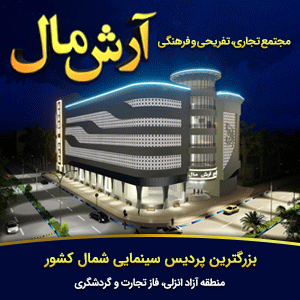

<section class="highlights">
  <div class="highlights__item"></div>

  <div class="highlights__provinces">
    <div class="highlights__header">
      <div class="highlights__header-title order-1 order-md-1">
        <span><i class="fa-solid fa-bars"></i> استان‌ها</span>
        <i class="fa-solid fa-angle-left"></i>
      </div>

      <div class="highlights__header-config order-2 order-md-3">
        <div class="highlights__header-config-content">
          <span><i class="fa-solid fa-rss"></i></span>
          <span class="highlights__gear"><i class="fa-solid fa-gear"></i></span>
        </div>

        <div class="highlights__header-config-option">
          <ul>
            <li>
              <i class="fa-solid fa-xmark"></i>
              <span>مخفی کردن شاخه</span>
            </li>
            <li>
              <i class="fa-solid fa-angle-up"></i>
              <span>انتقال کادر به بالا</span>
            </li>
            <li>
              <i class="fa-solid fa-angle-down"></i>
              <span>انتقال کادر به پایین</span>
            </li>
            <li>
              <i class="fa-solid fa-plus"></i>
              <span>افزودن کادر جدید</span>
            </li>
          </ul>
        </div>
      </div>

      <div class="highlights__header-headline order-3 order-md-2">
        <ul>
          <li>ورود به سایت گیلان</li>
        </ul>
      </div>
    </div>

    <div class="highlights__provinces-content-container">
      <div class="highlights__provinces-card-container">
        <div class="highlights__provinces-card">
          <div class="highlights__provinces-card-image">
            
          </div>

          <span>هدر سرمایه‌های میلیاردی برای ساخت فرودگاه‌های غیرفعال</span>
        </div>

        <div class="highlights__provinces-card">
          <div class="highlights__provinces-card-image">
            
          </div>

          <span>تکمیل پروژه‌های آبیاری و زهکشی توسط بخش خصوصی</span>
        </div>

        <div class="highlights__provinces-card">
          <div class="highlights__provinces-card-image">
            
          </div>

          <span>طرحی برای واردات خودرو توسط عشایر</span>
        </div>

        <span class="highlights__provinces-card-more">بیشتر ...</span>
      </div>

      <div class="highlights__provinces-map">
        <select
          name="free-zone"
          id="free-zone"
          class="highlights__provinces-map-free-zone"
        >
          <option value="">انتخاب منطقه آزاد</option>
          <option value="aras">ارس</option>
          <option value="arvand">اروند</option>
          <option value="anzali">انزلی</option>
          <option value="chabahar">چابهار</option>
          <option value="qeshm">قشم</option>
          <option value="kish">کیش</option>
          <option value="maku">ماکو</option>
        </select>
      </div>

      <div class="highlights__provinces-ads">
        
      </div>
    </div>
  </div>
</section>
